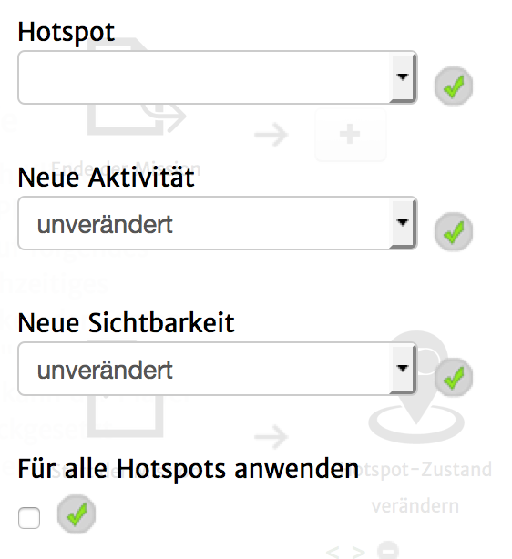

Mit diesem Aktionstyp ist es möglich, die Zustände eines oder aller Hotspots zu verändern.
Bedenke, dass eine Karte alle Hotspots anzeigt, welche "sichtbar" sind und alle Ereignisse von Hotspots, welche aktiv sind, ausgeführt werden können.
Beide Zustände können mit dieser Aktion gesetzt werden.
Folgende Einstellungsmöglichkeiten gibt es für diesen Aktionstyp:
|  | Hotspot: Der Hotspot, dessen Zustand gesetzt werden soll. Neue Aktivität: Der Wert den die Aktivität des Hotspots annehmen soll. Bei Auswahl von "unverändert", wird der Wert nicht verändert. Neue Sichtbarkeit: Der Wert den die Sichtbarkeit des Hotspots annehmen soll. Bei Auswahl von "unverändert", wird der Wert nicht verändert. Für alle Hotspots anwenden: Wenn hier ein Häkchen gesetzt ist, werden die Werte unter "Neue Aktivität" und/oder "Neue Sichtbarkeit" auf alle Hotspots angewendet. |